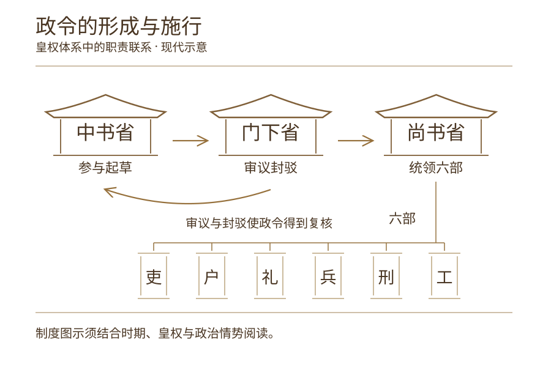
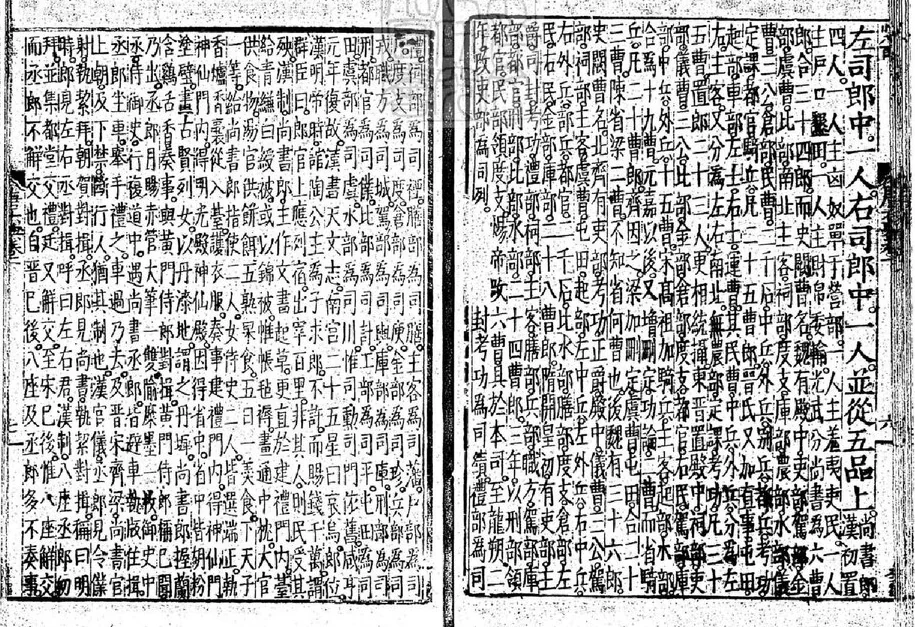
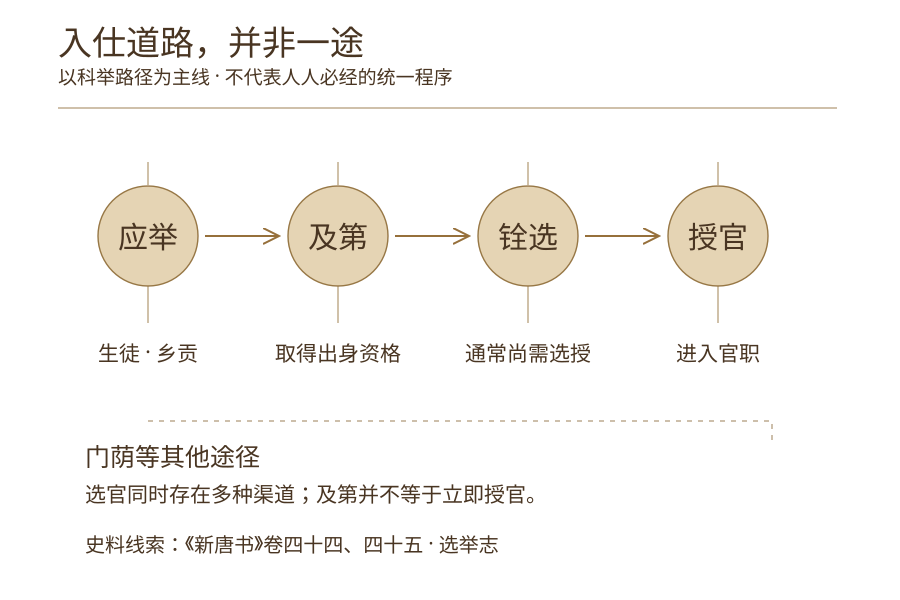
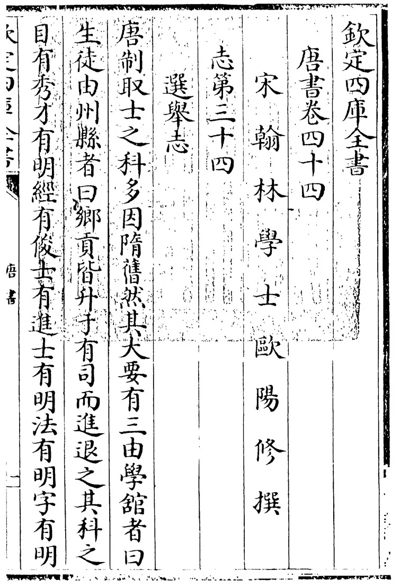
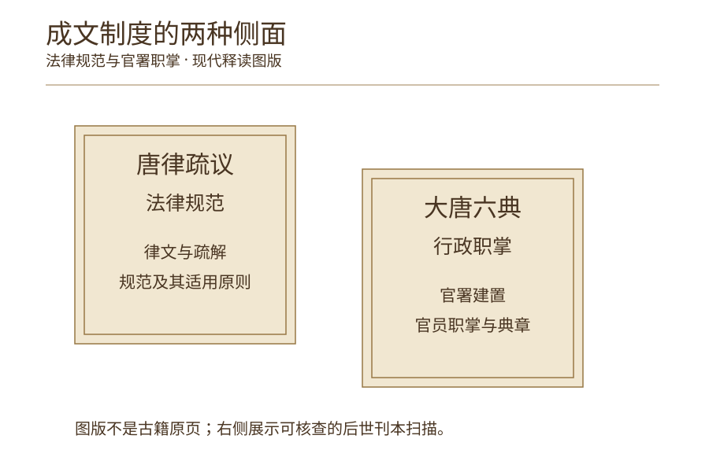
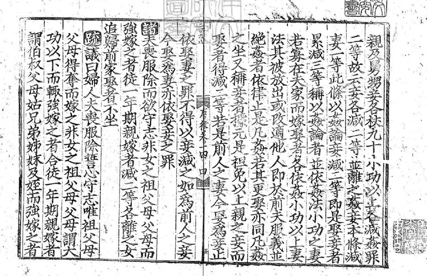

卷一 · 制度立国THE ORDER OF AN EMPIRE
政令之间，秩序成形
宏伟的宫阙之外，真正支撑王朝日常运转的，是一套由官署、选官与律令构成的治理体系。
唐承隋制，在继承与调整中形成了具有时代特色的国家秩序。
PLATE I / THE WORK OF GOVERNMENT《大唐六典》卷一刊页
正德十年序重刊本 · 后世刊本扫描 《新唐书》选举志上
四库全书本 · 后世文献扫描 《唐律疏议》宋刊残卷
存卷十四 · 古籍扫描


正德十年序重刊本 · 后世刊本扫描
观察点 01
一纸诏令，如何施行？
中书省参与政令起草，门下省负责审议封驳，尚书省统领六部，组织具体政务的执行。
三省在皇权体系下分工协作，使国家政令从中央决策逐步进入行政运行。
官署典章记录；不等同于实际政令的全过程。刊本页与公共领域说明 ↗

四库全书本 · 后世文献扫描
观察点 02
天下之才，如何入仕？
科举为士人提供了进入仕途的重要途径，但唐代选官方式并不只有科举，门荫等途径同样存在。
进士及第意味着取得相应出身资格，通常还需要经过铨选等程序，才能实际授官。
科目与取士的记述；结合选举志下理解铨选。刊本页与公共领域说明 ↗

存卷十四 · 古籍扫描
观察点 03
治国之法，如何有据？
国家治理不仅依靠官员，也需要成文制度。
《唐律疏议》保存了唐代法律规范及其解释，《大唐六典》记载官署建置与职掌，从不同方面呈现唐代国家治理的制度面貌。
律文与疏解并列，呈现法律规范及其解释。刊本页与公共领域说明 ↗官署轮廓与路径为现代释读；刊本页为真实古籍扫描。制度设计不代表所有时期相同的行政实况。
循制而考循史而读 / 查看依据
从制度名称，走向实际运行。
史料注解制度文本描绘的是规范与设计，实际运行仍会受到皇权、政治局势以及不同历史时期的影响。不能把制度示意图当成所有年份都完全一致的行政实况。上述证据说明是释读摘要，并非古籍原文引语。
秩序不只立于殿堂，也运行于每一道政令之间。